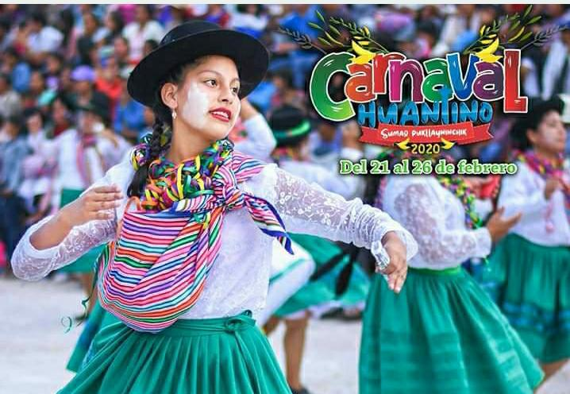

FEBRERO


CARNAVALES
Las tradicionales carnavales de Huanta, se celebran con festividades que van desde lo urbano, hasta lo rural. Al grito de "Chayraq!" las comparsas salen a las calles, con contrapuntos en el encuentro con otros bandos, resuenan las quenas, charangos, guitarras y mandolinas, tinyas, y los músicos y danzantes, van visitando los barrios, y se detienen en las casas de los vecinos para dotarse de botellas de licor pero también talco, harina, huevos con agua de anis
Esta festividad que desde tiempos remotos ha sido asimilada de occidente por nuestra cultura popular, particularmente en nuestra región le hemos dado un contenido diferente y peculiar. La región de Ayacucho no ha escapado a ello, y los huantinos a lo largo de los años hemos logrado conformar una identidad propia, confluyendo la dulzura y picardía del pueblo quechua, con la elegancia del mestizo.lina y arrayán
ABRIL

SEMANA SANTA
Sin lugar a dudas, la Semana Santa de Ayacucho es la más famosa en la república del Perú, porque en ella se despliegan procesiones y otras manifestaciones de religiosidad popular, que atraen a peregrinos y turistas nacionales y extranjeros. Una de estas manifestaciones es la representación de la muerte de Cristo en la ciudad de Huanta, que culmina en un Sermón de Desenclavo con la participación de imágenes y actores de carne y hueso. En efecto, en esta última localidad, la iglesia principal se convierte en frondoso bosque o monte Calvario, donde se colocan tres cruces con las efigies articuladas de Cristo y los dos ladrones. Entrada la tarde, después del Sermón de las tres Horas, “José de Arimatea” y sus Santos Varones, vestidos de blanco y con turbante en la cabeza, desclavan al mártir y las mujeres lo amortajan y lloran como si fuera su hijo.
La ceremonia contiene una urdiembre de conceptos y significados con sentidos proporcionados por los mismos participantes. ¿Cuáles son dichos símbolos y cuáles sus significados? Precisamente, el presente trabajo intenta dilucidar tal interrogante, a través de una etnografía del ritual. Siguiendo una línea de investigación e interpretación iniciada el 2008, postula que en las Tres Horas de Huanta y el Desenclavo de Cristo se despliegan símbolos dominantes, autónomos y concurrentes, que tienen que ver con la estructura dual y cuartipartida del pensamiento andino y con las tensas relaciones del poblador Huantino con la naturaleza.
MAYO
FIESTA DE LAS CRUCES
La fiesta de las cruces es una festividad muy tradicional, enraizada en la cultura de nuestros pueblos andinos que ancestralmente han dejado como herencia de ese sincretismo religioso del mundo andino con el mundo occidental, en la creencia de los Apus de nuestros antepasados y el Dios Cristiano que hoy veneramos en el mundo católico.
Las Cruces son un símbolo de la cristiandad, por ello que en muchos lugares del mundo la veneran, particularmente en nuestra cultura no faltan los cerros ancestrales que coronan con cruces, y aquellos lugares donde el hombre ha dejado su huella, las iglesias, en los caminos, algunas calles y barrios de los pueblos, los techos de muchas casas en la serranía del Perú tienen una cruz, en Ayacucho siempre se dice: "Maypin Cruz, Chaymin Dios", es decir "Donde está la cruz, allí está Dios", por ello que en el mundo religioso, a la festividad de la Semana Santa la precede la fiesta de las Cruces, Dios ha muerto y resucitado, la cruz ha quedado vacía pero como símbolo de la permanencia para liberar nuestros pecados.